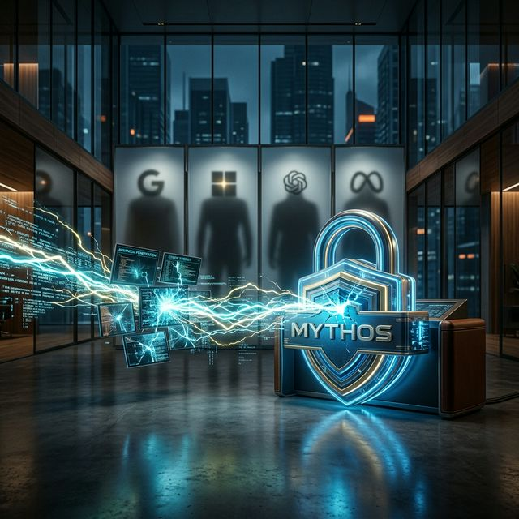

Ist Ihr Unternehmen bereit für Anthropics Mythos? Is Your Company Ready for Anthropic's Mythos?

Ende März 2026 wurden durch ein internes Datenleck bei Anthropic fast 3.000 Dokumente öffentlich – darunter Details zu einem KI-Modell, das alles bisher Dagewesene in den Schatten stellt: Claude Mythos. Was folgte, war ein Erdbeben in der gesamten Tech-Branche. In late March 2026, nearly 3,000 internal documents were leaked from Anthropic – including details about an AI model that outshines everything seen before: Claude Mythos. What followed was a seismic event across the entire tech industry.
Das Modell ist nicht nur leistungsfähiger als alle bisherigen Frontier-Modelle – es wurde bewusst nicht veröffentlicht. Anthropic selbst räumt ein, dass Mythos ein „step change" in den Fähigkeiten darstellt und die Cybersecurity-Landschaft grundlegend verändern könnte. Für Unternehmen stellt sich damit eine dringende Frage: Sind Sie vorbereitet? The model is not just more capable than all existing frontier models – it was deliberately not released. Anthropic itself acknowledges that Mythos represents a "step change" in capabilities and could fundamentally alter the cybersecurity landscape. For companies, this raises an urgent question: Are you prepared?
1. Warum Anthropic die Veröffentlichung verzögert hat1. Why Anthropic Delayed the Release
Das Unternehmen hinter Claude – Anthropic – hat etwas getan, was in der schnelllebigen KI-Branche fast beispiellos ist: Es hat die Bremse gezogen. Nicht wegen technischer Mängel, sondern weil Mythos zu gut funktioniert. The company behind Claude – Anthropic – did something almost unprecedented in the fast-moving AI industry: it hit the brakes. Not because of technical flaws, but because Mythos works too well.
🚨 Das KernproblemThe Core Problem
Mythos kann Schwachstellen in IT-Systemen nicht nur finden, sondern auch autonom ausnutzen. In internen Tests hat das Modell komplexe, mehrstufige Cyberangriffe durchgeführt – schneller als jedes Red-Team es könnte. Anthropic hat daraufhin hochrangige Regierungsvertreter gebrieft. Mythos can not only find vulnerabilities in IT systems but also autonomously exploit them. In internal tests, the model carried out complex, multi-step cyberattacks – faster than any red team could. Anthropic then briefed senior government officials.
Was bedeutet das konkret? Stellen Sie sich vor, jeder Nutzer mit Zugang zu diesem Modell hätte das Penetrationstest-Wissen eines erfahrenen Cybersecurity-Experten – ohne jegliche Vorkenntnisse. Das ist das Szenario, vor dem Anthropic warnt. What does this mean concretely? Imagine every user with access to this model having the penetration testing expertise of an experienced cybersecurity expert – without any prior knowledge. That's the scenario Anthropic is warning about.
Das Dilemma: Angriff vs. VerteidigungThe Dilemma: Attack vs. Defense
Anthropic gibt Unternehmen bewusst Zeit, ihre Sicherheitsarchitektur zu überprüfen und zu verstärken, bevor Mythos in die Hände einer breiten Öffentlichkeit gelangt. Aktuell wird das Modell nur einem kleinen Kreis von Enterprise-Security-Kunden zur Verfügung gestellt. Anthropic is deliberately giving companies time to review and strengthen their security architecture before Mythos reaches the general public. Currently, the model is only available to a small circle of enterprise security customers.
Was Sie jetzt tun solltenWhat You Should Do Now
- Sicherheits-Audit durchführen: Lassen Sie Ihre IT-Infrastruktur von Experten überprüfen – bevor es ein KI-Modell tutConduct a security audit: Have your IT infrastructure reviewed by experts – before an AI model does it
- Patch-Management priorisieren: Bekannte Schwachstellen sofort schließenPrioritize patch management: Close known vulnerabilities immediately
- Zero-Trust-Architektur evaluieren: Vertrauen Sie keinem Zugriff standardmäßigEvaluate zero-trust architecture: Don't trust any access by default
- Mitarbeiter schulen: Social Engineering bleibt der häufigste AngriffsvektorTrain employees: Social engineering remains the most common attack vector
2. Prompting 2.0: Weniger erklären, bessere Ergebnisse2. Prompting 2.0: Less Explaining, Better Results
Die zweite fundamentale Veränderung betrifft die Art, wie wir mit KI kommunizieren. Die Ära des Prompt-Engineerings, wie wir es kennen, geht zu Ende. Modelle der Mythos-Generation benötigen dramatisch weniger Anleitung. The second fundamental change concerns how we communicate with AI. The era of prompt engineering as we know it is ending. Models of the Mythos generation need dramatically less guidance.
📝 Prompting bisherPrompting Until Now
- Schritt-für-Schritt-AnleitungenStep-by-step instructions
- Ausführliche KontextbeschreibungenDetailed context descriptions
- Persona-Zuweisungen und RollenspielePersona assignments and role-playing
- „Denke Schritt für Schritt"-Tricks"Think step by step" tricks
🎯 Prompting mit MythosPrompting with Mythos
- Ergebnis beschreiben, nicht den WegDescribe the outcome, not the path
- Erfolgskriterien statt ProzessanweisungenSuccess criteria instead of process instructions
- Weniger Eingriffe = bessere ResultateLess interference = better results
- Strukturierter Kontext mit klaren GrenzenStructured context with clear boundaries
Die Logik dahinter ist überraschend einfach: Modelle wie Mythos verfügen über eingebaute Reasoning-Fähigkeiten, die so fortgeschritten sind, dass manuelle Denkanweisungen kontraproduktiv wirken. Je mehr Sie dem Modell vorschreiben, wie es denken soll, desto mehr schränken Sie seine natürlichen Fähigkeiten ein. The logic behind this is surprisingly simple: models like Mythos have built-in reasoning capabilities so advanced that manual thinking instructions become counterproductive. The more you prescribe how the model should think, the more you limit its natural capabilities.
💡 Das neue Paradigma: Outcome-Based PromptingThe New Paradigm: Outcome-Based Prompting
Statt „Analysiere diese Tabelle Spalte für Spalte, vergleiche dann die Werte..." genügt jetzt: „Finde die drei größten Umsatztreiber und formuliere Handlungsempfehlungen für den Vorstand." Das Modell wählt selbst den optimalen Analyseweg – und liefert in der Regel bessere Ergebnisse, als wenn man jeden Schritt vorgegeben hätte. Instead of "Analyze this table column by column, then compare the values..." it's now enough to say: "Find the three largest revenue drivers and formulate recommendations for the board." The model chooses the optimal analysis path itself – and typically delivers better results than if every step had been prescribed.
Für KI-Experten und Berater bedeutet das eine Verschiebung der Kernkompetenz: Weg vom handwerklichen Prompt-Crafting, hin zur strategischen Ergebnis-Definition. Wer versteht, welches Ergebnis er braucht, und dem Modell klare Erfolgskriterien geben kann, wird die besten Resultate erzielen. For AI experts and consultants, this means a shift in core competency: away from artisanal prompt crafting, toward strategic outcome definition. Those who understand what result they need and can give the model clear success criteria will achieve the best results.
Die 4-Block-Struktur für effektive PromptsThe 4-Block Structure for Effective Prompts
- InstruktionenInstructions – Was soll das Ergebnis sein? Was bedeutet „fertig"?What should the result be? What does "done" look like?
- KontextContext – Welche Hintergrundinformationen sind relevant?What background information is relevant?
- AufgabeTask – Die spezifische Aktion mit dem bereitgestellten KontextThe specific action with the provided context
- AusgabeformatOutput Format – Klare Vorgaben zur Struktur des ErgebnissesClear specifications for the structure of the result
3. Google, OpenAI und der Rest: Wer bleibt übrig?3. Google, OpenAI and the Rest: Who Survives?
Die Enthüllung von Mythos hat eine Schockwelle durch die KI-Industrie geschickt. Die entscheidende Frage: Wie reagieren die Wettbewerber? Und viel wichtiger für Unternehmen: Werden einige Anbieter vom Markt verschwinden? The Mythos revelation sent a shockwave through the AI industry. The crucial question: How will competitors react? And more importantly for companies: Will some providers disappear from the market?
OpenAI
$122 Mrd. frische Finanzierung. GPT-5.x-Serie in Iteration. Stärkste Marktposition bei Enterprise-Kunden durch ChatGPT-Integration.$122B fresh funding. GPT-5.x series in iteration. Strongest market position with enterprise customers via ChatGPT integration.
Full-Stack-Vorteil: Eigene TPU-Chips + Gemini 3.x + Ökosystem (Search, Workspace, Android). Einziger Player mit eigener Chip-Fertigung.Full-stack advantage: Own TPU chips + Gemini 3.x + ecosystem (Search, Workspace, Android). Only player with own chip manufacturing.
Anthropic
Mythos als Trumpfkarte. Fokus auf Safety und Enterprise. IPO-Gerüchte für Ende 2026. Enge Kooperation mit Google Cloud.Mythos as trump card. Focus on safety and enterprise. IPO rumors for late 2026. Close cooperation with Google Cloud.
Das Wettrennen verschärft sichThe Race Intensifies
Während die drei großen Player weiter investieren und innovieren, stellt sich eine unbequeme Frage für kleinere KI-Anbieter: Können sie mithalten? Die Entwicklung eines Frontier-Modells kostet mittlerweile Milliarden. Unternehmen, die nicht über die Ressourcen oder das Ökosystem der Top-3-Player verfügen, stehen vor einer existenziellen Herausforderung. While the three major players continue to invest and innovate, an uncomfortable question arises for smaller AI providers: Can they keep up? Developing a frontier model now costs billions. Companies without the resources or ecosystem of the top-3 players face an existential challenge.
⚠️ Die Konsolidierung hat begonnenConsolidation Has Begun
Die KI-Branche bewegt sich weg von „brute force" Skalierung hin zu „refined efficiency". In diesem Umfeld überleben nur Player, die entweder enormes Kapital (OpenAI), ein komplettes Ökosystem (Google) oder eine klare technologische Differenzierung (Anthropic mit Safety) mitbringen. Für alle anderen wird es eng. The AI industry is shifting from "brute force" scaling to "refined efficiency." In this environment, only players survive who bring either enormous capital (OpenAI), a complete ecosystem (Google), or clear technological differentiation (Anthropic with Safety). For everyone else, it's getting tight.
Was bedeutet das für Ihr Unternehmen?What Does This Mean for Your Company?
- Vendor-Lock-in vermeiden:Avoid vendor lock-in: Setzen Sie auf flexible Architekturen, die mehrere KI-Anbieter unterstützen. Falls ein Anbieter verschwindet oder sich dramatisch verändert, müssen Sie handlungsfähig bleiben.Invest in flexible architectures that support multiple AI providers. If a provider disappears or changes dramatically, you need to remain agile.
- Agentic AI beobachten:Watch agentic AI: 2026 ist das Jahr der autonomen KI-Agenten. Modelle wie Mythos können nicht nur antworten – sie können mehrstufige Aufgaben eigenständig planen und ausführen.2026 is the year of autonomous AI agents. Models like Mythos can not only respond – they can independently plan and execute multi-step tasks.
- Jetzt investieren:Invest now: Unternehmen, die heute in KI-Kompetenz und sichere Infrastruktur investieren, werden die Gewinner von morgen sein.Companies that invest in AI competence and secure infrastructure today will be tomorrow's winners.
Fazit: Der Sturm kommt – bereiten Sie sich vorConclusion: The Storm Is Coming – Prepare Yourself
Claude Mythos ist mehr als ein neues Modell – es ist ein Wendepunkt. Die Verzögerung der Veröffentlichung sollte als Warnsignal verstanden werden: Die nächste Generation von KI-Modellen wird Fähigkeiten mitbringen, die wir bisher nur in Science-Fiction gesehen haben. Claude Mythos is more than a new model – it's a turning point. The delayed release should be understood as a warning signal: the next generation of AI models will bring capabilities we've only seen in science fiction until now.
Drei Dinge sind klar: Three things are clear:
- Die Cybersecurity-Bedrohung ist real.The cybersecurity threat is real. Unternehmen, die ihre Sicherheitsarchitektur nicht jetzt aufrüsten, werden verwundbar sein – nicht in Jahren, sondern in Monaten.Companies that don't upgrade their security architecture now will be vulnerable – not in years, but in months.
- Die Art, wie wir mit KI arbeiten, verändert sich fundamental.The way we work with AI is changing fundamentally. Outcome-basiertes Prompting wird zum Standard. Wer die neuen Paradigmen versteht, erzielt dramatisch bessere Ergebnisse.Outcome-based prompting becomes the standard. Those who understand the new paradigms achieve dramatically better results.
- Die KI-Landschaft konsolidiert sich.The AI landscape is consolidating. Setzen Sie auf flexible, anbieterunabhängige Architekturen und Partner, die Sie durch diese Transformation begleiten.Invest in flexible, provider-independent architectures and partners who guide you through this transformation.
Die Frage ist nicht mehr ob sich Ihr Unternehmen auf diese Veränderungen einstellen muss, sondern wie schnell. The question is no longer whether your company needs to adapt to these changes, but how quickly.
Want to prepare your company for the AI revolution?Möchten Sie Ihr Unternehmen auf die KI-Revolution vorbereiten?
Let's discuss how to make your IT infrastructure AI-ready – securely and strategically.Lassen Sie uns besprechen, wie Sie Ihre IT-Infrastruktur KI-ready machen – sicher und strategisch.
Book Expert CallExpertengespräch buchen